Monday, November 16, 2026
Doom Was Always the Plan
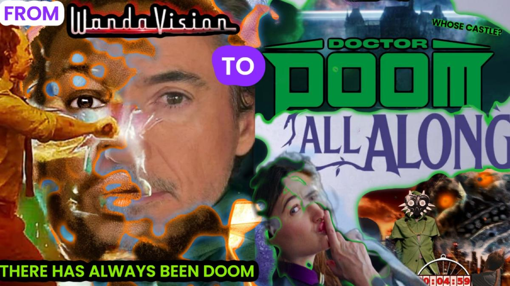
Tonight's stream title is Doom Was Always the Plan; here's a refresher on every Multiverse Saga project before the monologue. The list is in release order.
Kevin Feige
“We had started even before what had happened to the actor happened, we had started to realize that Kang wasn’t big enough, wasn’t Thanos, and that there was only one character that could be that, because he was that in the comics for decades and decades,” said Feige. “Because of the Fox acquisition, we finally had it, and it was Dr. Doom. So we had started talking about Dr. Doom even before we officially pivoted from Kang. And in fact, I had started talking with Robert [Downey Jr.] about this audacious idea before Ant-Man 3 even came out. It was a long plan that we had, to take one of our greatest characters and utilize one of our greatest actors.”
Kevin Feige, The Hollywood Reporter, July 20, 2025. The bracket is the Reporter’s.
“Is Steve Rogers a Johnny Storm variant?”
“People wondered, ‘Is Doom just a variant of another character? Is this just a shortcut to bringing back another character?’ The answer is no. He’s Victor Von Doom.”
Kevin Feige, Empire, November 12, 2026, on whether Doctor Doom in Avengers: Doomsday is a Tony Stark variant. Empire notes that the first line points to Chris Evans, who has played both Steve Rogers and Johnny Storm.
Robert Downey Jr. and the 2005 Fantastic Four
Fantastic Four opened in 2005. Julian McMahon played Doctor Doom. Kevin Feige was an executive producer on that film. In a later conversation with Feige, director Jon Favreau said Downey had already met Marvel about the part before Iron Man.
“I remember that Robert had come in for a general [meeting] on [‘Iron Man’] and you had already met with him for Doctor Doom or something,” Favreau told Feige. “I think he had come through on ‘Fantastic Four.’ So everybody knew who he was.”
Jon Favreau to Kevin Feige, quoted by Variety, July 29, 2024. Brackets are Variety’s. Variety reports that Feige nodded as Favreau said this.

WandaVision premiered on January 15, 2021, the first Marvel Studios series on Disney+. Wanda Maximoff traps the town of Westview inside the Hex and lives a sitcom life there with Vision and their twins, Billy and Tommy, in a different television decade each week. Agatha Harkness reveals herself, a second Vision is rebuilt in white, and the series ends with Wanda studying the Darkhold.

The Falcon and the Winter Soldier premiered on March 19, 2021. Sam Wilson decides whether to carry Captain America's shield, Bucky Barnes tries to make amends for his years as the Winter Soldier, and the Flag Smashers fight the borders drawn after the Blip. The series also covers Isaiah Bradley, a forgotten super-soldier, John Walker's time with the shield, and a post-credits scene in which Contessa Valentina Allegra de Fontaine recruits Walker.
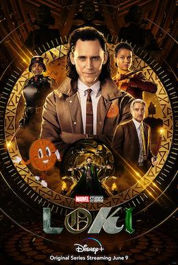
Loki season 1 premiered on June 9, 2021. The Loki who escaped with the Tesseract during Avengers: Endgame is arrested by the Time Variance Authority, which prunes branching timelines to protect one Sacred Timeline. At the Citadel at the End of Time, he and Sylvie meet He Who Remains, played by Jonathan Majors, who says variants of himself fought a multiversal war and that he built the TVA to prevent another. Sylvie kills him, and the branches spread.

What If...? premiered on August 11, 2021, with further seasons in 2023 and 2024. The Watcher narrates animated stories set in other universes. In season 1, Doctor Strange Supreme destroys his own universe while trying to undo a death, and another episode gives Ultron the Infinity Stones.
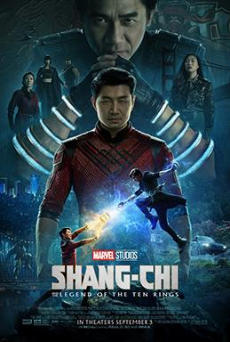
Shang-Chi and the Legend of the Ten Rings opened on September 3, 2021. Shang-Chi is drawn back to his father, Xu Wenwu, master of the Ten Rings, and the conflict leads to the hidden land of Ta Lo. In a post-credits scene, Wong, Carol Danvers, and Bruce Banner look at the rings, which are sending a signal.

Eternals opened on November 5, 2021. Immortals who have lived in secret on Earth learn that the planet is incubating a Celestial, Tiamut, whose Emergence would destroy it. The group splits, and Sersi stops the birth. Post-credits scenes introduce Eros, show Dane Whitman with the Ebony Blade, and include a voice cameo of Blade.

Spider-Man: No Way Home opened on December 17, 2021. After Peter Parker's identity goes public, he asks Doctor Strange for a spell that would make the world forget. The spell breaks, and villains from other universes cross over, followed by two other Peter Parkers. Together they try to cure the visitors who can be saved and send everyone home.
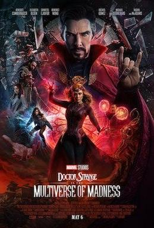
Doctor Strange in the Multiverse of Madness opened on May 6, 2022. America Chavez can travel between universes, and Wanda Maximoff, using the Darkhold, pursues her in search of other versions of her sons, Billy and Tommy. On Earth-838 Wanda destroys that world's Illuminati, including a Reed Richards played by John Krasinski. In the mid-credits scene, Charlize Theron appears as Clea, tells Strange that his universe-hopping has caused an incursion, and cuts open a portal.
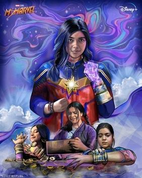
Ms. Marvel premiered on June 8, 2022. Kamala Khan, a teenager in Jersey City, unlocks powers with a bangle from her great-grandmother, and the Clandestines try to use that connection to reach the Noor dimension. Her friend Bruno finds a mutation in her genes. A post-credits tag swaps places with Carol Danvers and leads into The Marvels.

Thor: Love and Thunder opened on July 8, 2022. Gorr the God Butcher, armed with the Necrosword, hunts gods across the cosmos. Jane Foster wields Mjolnir as the Mighty Thor. At Eternity, Gorr wishes his daughter, Love, back to life, and Thor raises her. Zeus, played by Russell Crowe, appears in Omnipotence City.

She-Hulk: Attorney at Law premiered on August 18, 2022. Jennifer Walters, a lawyer who shares Bruce Banner's blood and his Hulk transformation, takes cases involving superhuman clients and spends part of the season with Daredevil. In the finale she breaks the fourth wall, confronts K.E.V.I.N., an artificial-intelligence stand-in for the writers, and has the ending rewritten.

Black Panther: Wakanda Forever opened on November 11, 2022, and mourns T'Challa after Chadwick Boseman's death. Shuri becomes the Black Panther while Namor, ruler of the undersea nation Talokan, threatens the surface world. Student inventor Riri Williams builds armor that draws Namor's attention, setting up Ironheart. A mid-credits scene reveals T'Challa's son, Toussaint.

Ant-Man and the Wasp: Quantumania opened on February 17, 2023. Scott Lang, Cassie Lang, Hope van Dyne, and Janet van Dyne are pulled into the Quantum Realm, where they face Kang the Conqueror, played by Jonathan Majors, who was exiled there by variants of himself. Darren Cross returns as M.O.D.O.K. A post-credits scene assembles a council of many Kang variants.

Guardians of the Galaxy Vol. 3 opened on May 5, 2023. The plot follows Rocket's origin: the High Evolutionary experimented on him and his friends and maintains a Counter-Earth as one of his designs. Adam Warlock is sent after Rocket. The Guardians stop the High Evolutionary, the team re-forms without Peter Quill, and Quill returns to Earth.
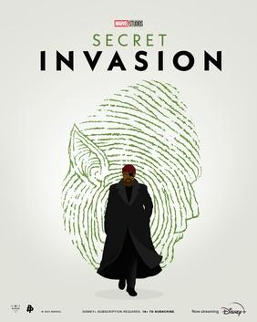
Secret Invasion premiered on June 21, 2023. Nick Fury and the Skrull general Talos uncover a rebel faction led by Gravik, made up of Skrulls who were promised a home on Earth and did not receive one. The series reveals that James Rhodes has been replaced by a Skrull.
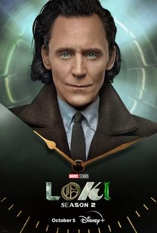
Loki season 2 premiered on October 5, 2023, and the finale aired on November 9, 2023. Loki learns to direct his time slipping while the Temporal Loom fails under the weight of the new branches. Victor Timely, a variant played by Jonathan Majors, is a nineteenth-century inventor brought in to repair it. When the Loom cannot be saved, Loki destroys it and holds the timelines himself, ending seated at the end of time.
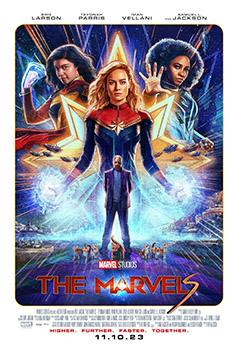
The Marvels opened on November 10, 2023. Carol Danvers, Monica Rambeau, and Kamala Khan swap places whenever they use their powers. Dar-Benn, a Kree revolutionary, uses a quantum band to open passages between worlds and take air and sunlight from other planets. A post-credits scene leaves Monica in another universe, where Kelsey Grammer appears as Beast.

Echo premiered on January 9, 2024, with every episode at once, as the first Marvel Spotlight series. Set after Hawkeye, it follows Maya Lopez home to Oklahoma while Wilson Fisk pursues her. She reconnects with her family and with abilities tied to her Choctaw ancestors.
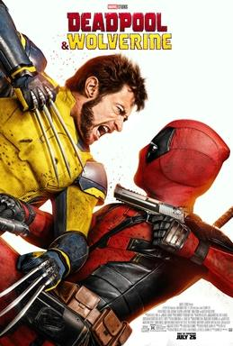
Deadpool & Wolverine opened on July 26, 2024. The TVA takes Wade Wilson, and the agent Paradox plans to erase Wade's timeline with a Time Ripper because its anchor being has died. Wade partners with a variant of Wolverine, played by Hugh Jackman, against Cassandra Nova in the Void. The film also brings back Wesley Snipes as Blade, Jennifer Garner as Elektra, and Chris Evans as Johnny Storm.
Agatha All Along premiered on September 18, 2024. Agatha Harkness, left without her power at the end of WandaVision, assembles a coven and travels the Witches' Road. The boy with them, called Teen, is Billy Maximoff, Wanda's son, searching for his brother Tommy. Rio Vidal is revealed as Death, and the Road itself was created by Billy's spell.
Captain America: Brave New World opened on February 14, 2025, with Anthony Mackie as Sam Wilson, Captain America. Harrison Ford plays President Thaddeus Ross, the part William Hurt played until his death in 2022, and Ross becomes the Red Hulk. Tim Blake Nelson returns as Samuel Sterns, the Leader. The plot also involves adamantium tied to the Celestial left in the ocean in Eternals.
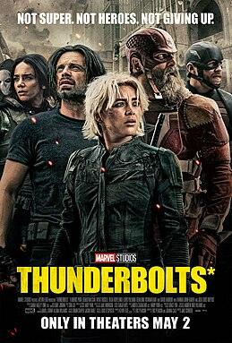
Thunderbolts* opened on May 2, 2025. Yelena Belova, Bucky Barnes, Red Guardian, Ghost, and John Walker are sent on a mission by Valentina Allegra de Fontaine and meet Bob, who is both the Sentry and the Void. The Void traps people inside memories of their worst moments. Taskmaster is killed near the start. The team is introduced to the public as the New Avengers. A post-credits scene, set fourteen months later, shows them detecting an extradimensional ship marked with a 4.

Ironheart premiered on June 24, 2025. Riri Williams, introduced in Wakanda Forever, returns to Chicago and builds armored suits. She crosses Parker Robbins, the Hood, whose cloak is magical rather than mechanical. In the finale, Mephisto, played by Sacha Baron Cohen, is revealed as the one who gave Robbins that cloak. After Riri loses the artificial intelligence she modeled on her friend Natalie, Mephisto offers her a deal, and she takes it.
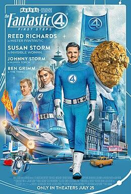
The Fantastic Four: First Steps opened on July 25, 2025. Pedro Pascal, Vanessa Kirby, Joseph Quinn, and Ebon Moss-Bachrach play Reed Richards, Sue Storm, Johnny Storm, and Ben Grimm on Earth-828, a retro-futuristic world separate from the main MCU Earth. Julia Garner's Silver Surfer heralds Galactus, who will spare the planet if Reed and Sue surrender their son, Franklin. They refuse, and they stop him.

Avengers: Doomsday is scheduled for December 18, 2026, and Avengers: Secret Wars for December 17, 2027. Anthony and Joe Russo are directing both. Marvel announced the first film in July 2022 as Avengers: The Kang Dynasty, with Jonathan Majors set to play Kang. Majors was fired in December 2023. In July 2024, at San Diego Comic-Con, the film was retitled Avengers: Doomsday, and Robert Downey Jr. was announced as Victor von Doom.
Monday, November 16, 2026, 9:00 PM Eastern. The novena is still here in the morning.
Tonight's live stream · Mon Nov 16, 9 PM ET: https://www.youtube.com/watch?v=c6QBwKilMdA Join our Pio's Lost Sheep Discord Server: https://discord.gg/HqXPUEd5JQ Tithe Your Shekels: https://ko-fi.com/pioslostsheep Next live: https://www.youtube.com/channel/UCSadxDY_Q3o_ELwXacDTP6A/live